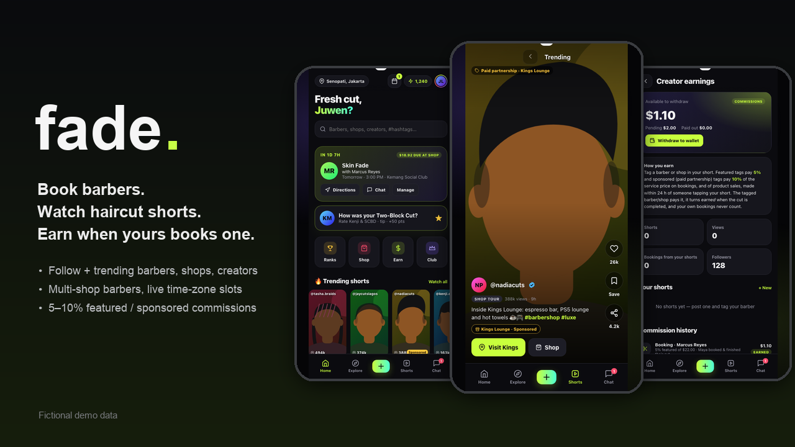
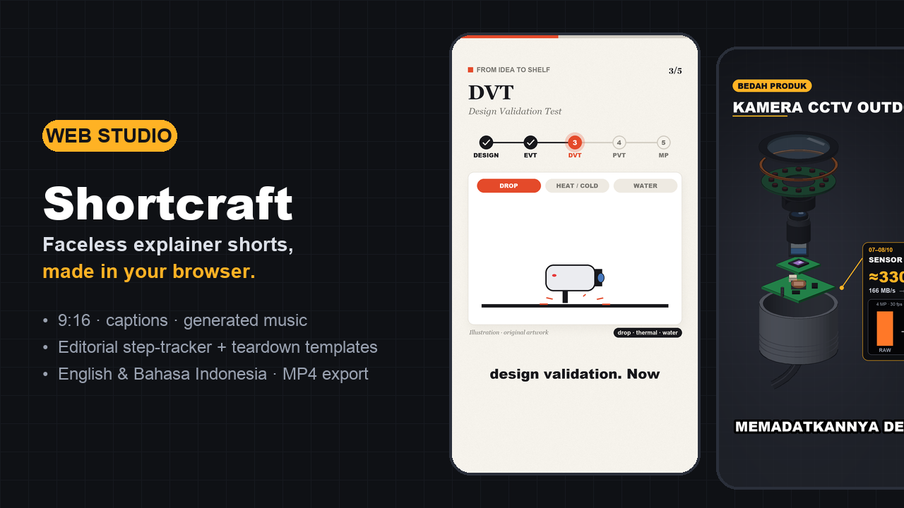
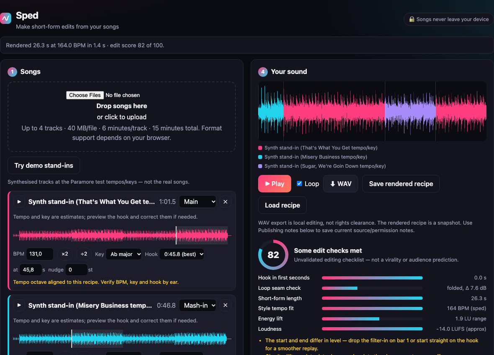
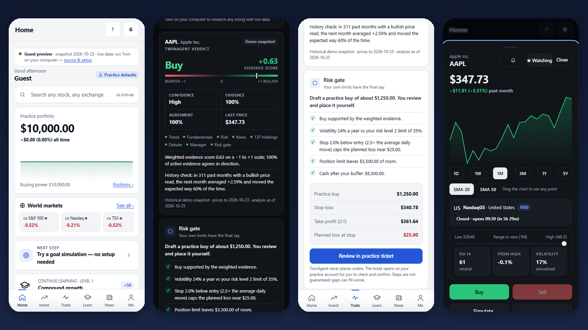
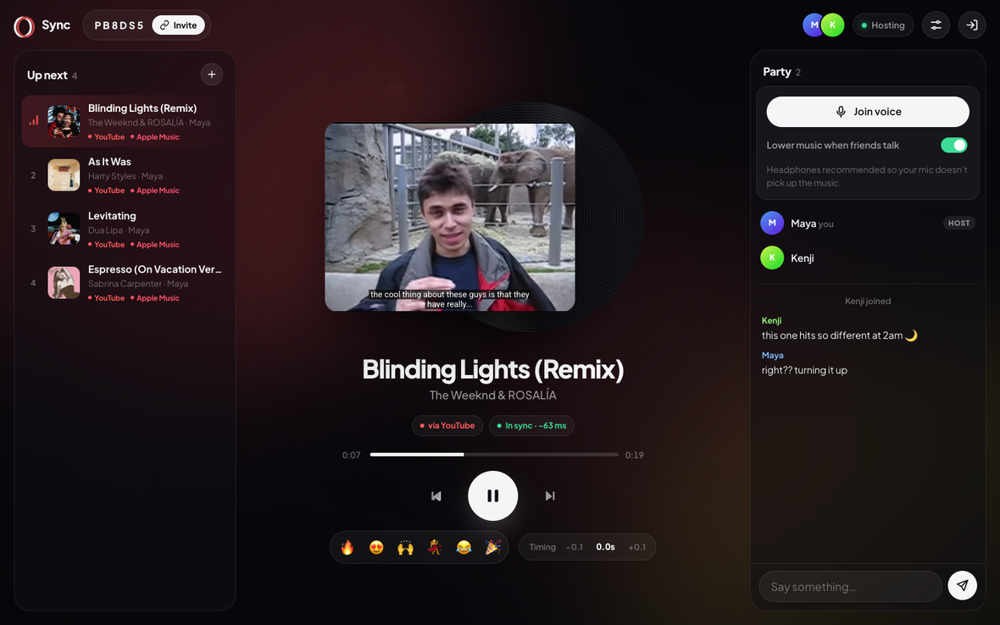

Build log
Everything I ship (engineering tools, CAD models and side projects), newest first.
Lingua
Universal language helper for Windows, iPhone and Android: text, pictures and live captions, with local AI and offline fallback.

Airiz Motor
AIRIZ test console for Windows, Android, iPhone and web — USB/Bluetooth jog, motor stop, LEDs, macros, phone camera sharing.

Vertex
Offline parametric CAD and engineering copilot that repairs models, checks clearances and exports STL, 3MF and DXF.

3D Models Library
41 landmark and character miniatures as STL/STEP, including a 100 mm Kobo-chan figurine revised for Form 3 SLA.

Glow
Three AI apps on one free account — GlowLead plans goals, GlowChat compares models, GlowRoom researches and codes.

Fade
Barber marketplace with haircut shorts — live and free: book barbers, pay them directly at 0% fee, earn from your shorts.

Sweep
Turns a rough app idea into a scored spec, task board and launch plan, then hands it to Cursor, v0 or Claude Code.

Shortcraft
Browser studio for faceless explainer shorts — script, voice, captions and 1080×1920 MP4 export with auto-posting.

Sped
Turns your own songs into sped-up, slowed or mashup 9:16 shorts with captions for TikTok, Reels and Shorts.

Hazel
Desktop creator studio: generate a video from a prompt, refine it and publish to every platform at once.

Orbis
Offline-first personal hub for replies, commitments and summaries on a zero-dependency Python + SQLite backend.

Peers
Offline-first review app across 32 categories, from food to AI tools, with a quick Use it / Wait / Skip scorecard.

Twin
Investing companion with a five-analyst AI research team, global stock search, paper trading and a replay lab.

Guang Yao Together · 光耀同行
Unofficial Traditional Chinese learning app for 發一光耀 with lessons, an AI study companion and spaced review.

House of Articles
Sneaker news meets market data — links athletes’ on-court moments to resale price moves.

Sync
Listen to music together in real time across Spotify, Apple Music and YouTube, with voice chat and no account.

SOMA
Open-source AI CAD by Kai Jungsthöfel — a coding agent writes CadQuery, SOMA builds, checks and exports it.

Vector
AI engineering copilot for Fusion and SOLIDWORKS by Vector Copilot LLC that builds and repairs native features.

Mint
Describe a spreadsheet, tweak it in plain words, export a working .xlsx and sell it on a built-in marketplace.

ME R&D Toolkit
Offline workspace for mechanical R&D — NPI task flow, review checklists, issue log and 11 engineering calculators.
Game Library
A collection of browser games maintained inside Projects.
Updated automatically · juwenlie.pages.dev/hi